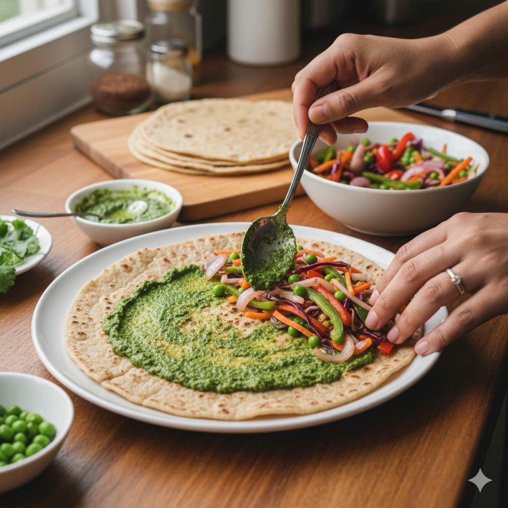
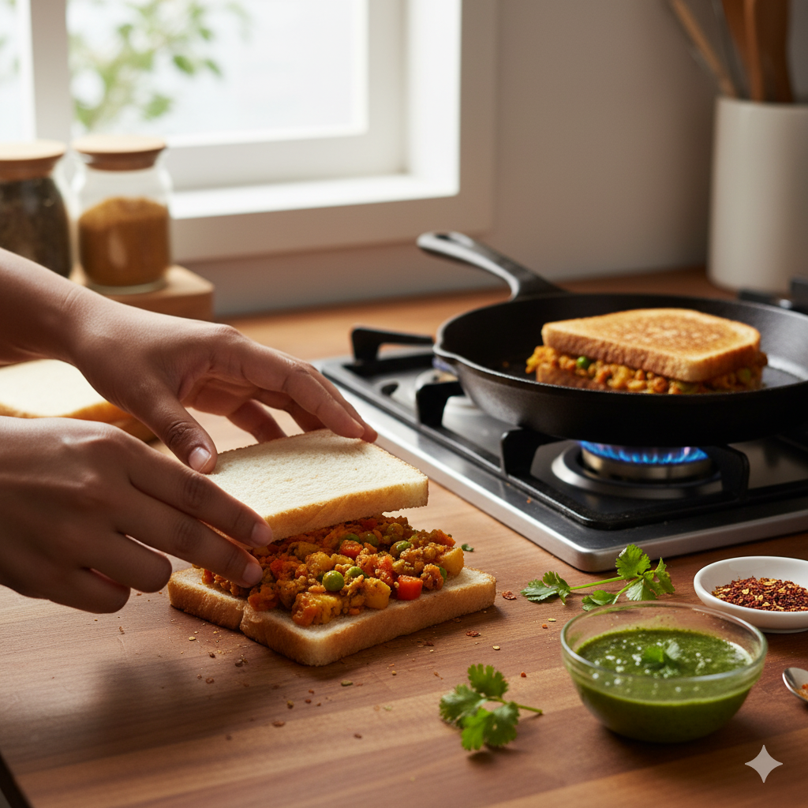

✨ Some Recipe Ideas
Turn yesterday’s food into today’s feast!

Leftover Rice → Fried Rice 🍚
Transform last night’s plain rice into a tasty Indo-Chinese fried rice.

Leftover Roti → Veg Rolls 🌯
Use leftover rotis to make quick and healthy rolls for evening snacks.

Leftover Dal → Dal Paratha 🫓
Knead dal into wheat flour and make soft, protein-rich parathas.

Leftover Sabzi → Masala Sandwich 🥪
Stuff dry sabzi into bread, toast it, and enjoy a yummy sandwich.